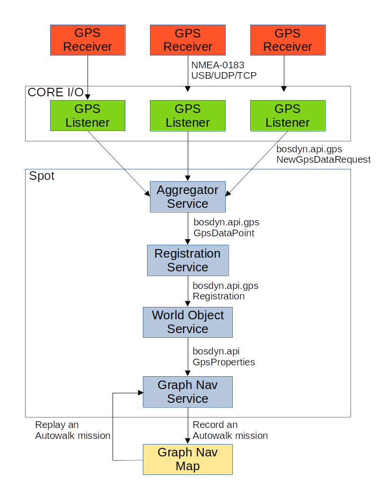
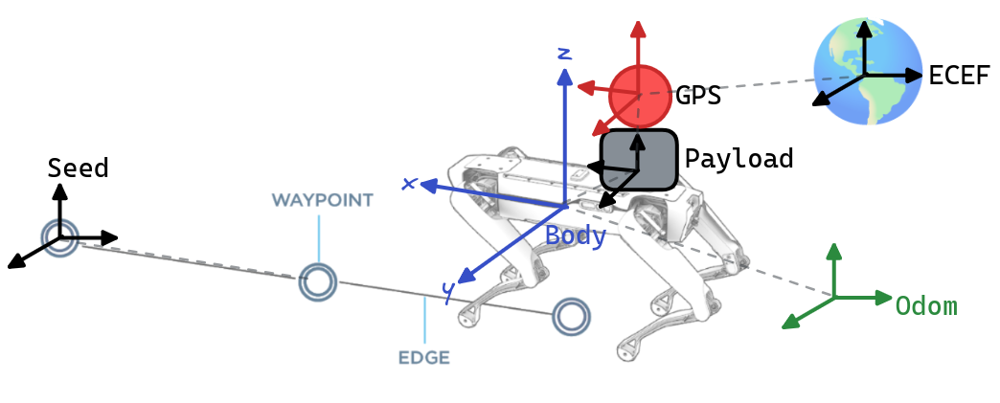
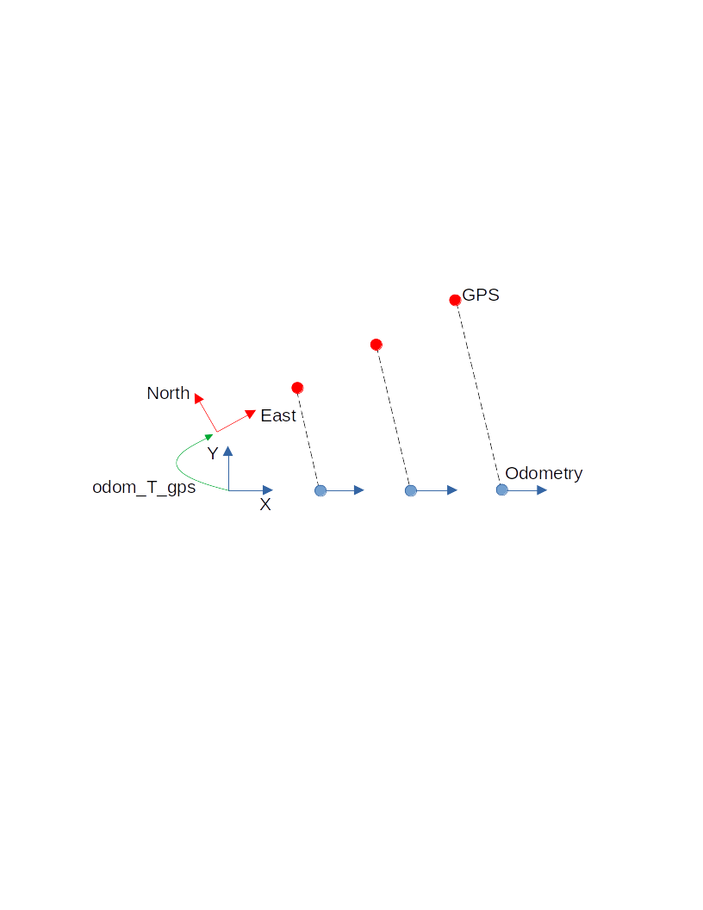

GPS on Spot
Starting in software version 4.0, the Spot SDK now supports integration with Global Positioning Systems (GPS) and Global Navigation Satellite Systems (GNSS) hardware. Spot can be localized to Earth-centered reference frames and can autonomously navigate and localize on Graph Nav maps that have been recorded with these systems.
Hardware Integration
GPS Receiver Overview
GPS devices compute their position with respect to the Earth using constellations of satellites. Their computed fixes are typically reported through a standard message protocol specified by the Nation Marine Electronics Association known as NMEA-0183. GGA messages include information about the computed position of the receiver, such as latitude, longitude, and altitude. GST messages include information about the quality of the computed position fix, such as the standard deviation in meters of the latitude, longitude, and altitude measurements. In addition to computing the position of the receiver, GPS receivers also compute an accurate time measurement. The time measurement is captured in the ZDA message.
Most consumer-grade GPS receivers can compute their location with a few meters of accuracy. This accuracy can be improved using a system of base stations and relay satellites. One system, known as Satellite Based Augmentation System (SBAS) uses ground stations at known locations to compute positioning errors and relay them to receivers using a network of relay satellites. In the United States, this system is also known as Wide Area Augmentation System (WAAS). To achieve centimeter level accuracy, a system known as Real Time Kinematics (RTK) can be used. This system uses a local base station to report corrections directly to the receiver. For use in robot navigation, it is recommended to use a receiver that supports one or more correction services to maximize the accuracy of the measurements and the performance of the system as a whole.
Attaching GPS Receivers to Spot
GPS receivers make NMEA-0183 messages available through different interfaces. Examples of receiver interfaces include USB, Ethernet, Wi-Fi, and Bluetooth. Spot is not able to consume this data directly from the sensor. Instead, Spot has an interface for accepting GPS data from attached payloads through its API. This means that in addition to a GPS receiver payload, a user must also attach a payload capable of translating from the GPS receiver interface to the Spot API. For information about designing and attaching payloads for Spot, refer to the documentation here. The figure shown below depicts a system with three GPS receivers communicating with Spot through the GPS API.
Boston Dynamics provides an example of such a system involving the Trimble SPS986. The CORE I/O and associated extension also supports GPS devices using USB and UDP connections.
 Figure 1: Spot GPS System Diagram
Writing Custom GPS Services
The GPS Listener example provided by Boston Dynamics translates NMEA-0183 messages to the Spot API. If this is not suitable for a use case, it is possible to interface with the Spot API directly to provide GPS data. To do this, a new service should be developed. For information on how to do this, please refer to the documentation here. This service will need to send NewGpsDataRequest messages to Spot’s Aggregator service. This request must contain information about the position of the receiver in either Geographic Coordinate System (GCS: latitude, longitude, and altitude) or in Earth Centered Earth Fixed (ECEF) coordinates. Additionally, the timestamp of the fix in robot time and the quantity of satellites used to calculate the fix must be provided. If available, other information such as horizontal and vertical accuracy, yaw, heading, the GPS timestamp, and information about individual satellites used for the fix can be included. GPS data points must also include an SE3Pose specifying the location of the receiver with respect to Spot’s body. For additional information, please refer to the API documentation.
Background
Common Reference Frames
See the geometry and frames document for more information on common robot reference frames and their definitions.
 Figure 2. Relevant GPS Frames
GPS data are used in Spot’s SDK through the following reference frames:
Robot Body - “body” (see frames doc)is a frame at the geometric center of the robot’s body.
Odometry - “odom” (see frames doc) is an inertial frame that estimates the fixed location in the world (relative to where the robot is booted up) using the kinematics of the robot.
Payload - is the frame of the robot’s payload computer, usually defined using the payload registration service.
GPS Antenna - “gps” this is the frame of the GPS receiver antenna, and is the frame that the GPS unit should be reporting positional measurements in. The orientation convention for this frame should be the same as with the robot body; that is, the x-axis should point “forward”, and the z axis should point “up”. The GPS antenna payload is defined in the GPS service itself.
Earth-Centered-Earth-Fixed - “ecef” is a standard frame defined based on the center of the Earth. Some parts of the SDK refer to the GPS antenna or robot body’s relative position and/or orientation with respect to this frame.
Latitude/Longitude/Height - “llh” refers to angular measurements on the Earth’s surface and an altitude measurement. Some parts of the SDK refer to the GPS antenna or robot body’s position using this convention.
Seed Frame - “seed” is a fixed metric frame in which a Graph Nav map has been represented (see Graph Nav Map Structure). Graph Nav maps may contain a transformation between seed frame and the ECEF frame.
Waypoint Frame - “waypoint” defines the frame of a graph nav waypoint. Usually this is the frame of the robot body at the time that the waypoint was recorded. Waypoints may contain transformations to the ECEF frame.
Software Integration
Registration to Odometry
As Spot moves, it measures the movement of its body with respect to the ground. This position measurement is known as odometry and is measured with respect to a coordinate frame known as odom. Importantly, this measurement has six degrees of freedom, three for position and three for orientation. When GPS data is received by Spot, it provides estimates of position, but not orientation. In order to extract orientation information, the GPS data is transformed into a Cartesian coordinate system tangent to the surface of the Earth. A trajectory of odometry and GPS measurements is synchronized in time and recorded. As Spot moves through its environment, this trajectory is used to find a registration odom_T_gps between the odom frame and the GPS frame tangent to the Earth.

Figure 3: Correlation and registration of GPS and Odometry trajectories.
The currently computed registration can be queried using the Spot API. The Registration service supports the GetLocation RPC which returns a GetLocationResponse .
GetLocationResponse::Status | Explanation
—————————————————–|—-
STATUS_UNKNOWN | No registration could be computedSTATUS_OK | A (possibly invalid) registration was computedSTATUS_NEEDS_DEVICE | No GPS device is available to compute a registration
If the Registration status is STATUS_OK, a Registration object will be available for inspection.
Registration::Status | Explanation
— | —STATUS_UNKNOWN | No registration could be computedSTATUS_OK | A registration was computedSTATUS_NEED_DATA | No usable GPS data was availableSTATUS_NEED_MORE_DATA | Spot has not moved far enoughSTATUS_STALE | No usable data has been received recently enough to compute a registration
Registration to Graph Nav Maps
While recording a Graph Nav map (see here), whenever a GPS device is attached to the robot and a registration to odometry is found, the registration is stored in the Graph Nav Map inside individual waypoint snapshots.
This is referred to as “raw GPS data” in examples (see here). Note that the raw data stored in waypoint snapshots represents the registration to the odometry frame at the time the waypoint snapshot was recorded, and may be inaccurate or missing entirely in areas where there were no satellites reachable from the GPS.
# World objects stored within waypoint snapshots may contain raw GPS data and
a registration to the odometry frame.
for world_object in snapshot.objects:
if world_object.HasField('gps_properties'):
# This is a "latitude longitude height" message.
llh = world_object.gps_properties.registration.robot_body_location
Graph Nav maps can also be registered to the ECEF frame using anchoring optimization (see here). This process takes all of the raw GPS data in the map along with the odometry data, fiducials, loop closures and other measurements to find an optimized registration between the seed frame and the ECEF frame.

Figure 4: an example of the raw (blue) and annotated (red) GPS data displayed on
OpenStreetMaps. The raw data may have noise, missing data, or systematic
errors that anchoring optimization attempts to correct.
Registrations to the ECEF frame obtained via this method are available in waypoint annotations:
# The optimized GPS data is stored in each waypoint's annotations.
ecef_tform_waypoint = waypoint.annotations.gps_settings.ecef_tform_waypoint
Note that after anchoring optimization, all of the waypoints stored in the graph will have an associated ecef_tform_waypoint transform. For waypoints without raw GPS data in them, this value corresponds to the anchoring optimizer’s best guess at where these waypoints are given the data from waypoints that do have raw gps data in them.
If you are unsatisfied with the results of anchoring optimization, or want to modify the gps coordinates of any waypoint, you may directly set the values inside waypoint annotations, and these will be used by the robot for navigation and localization.
Tablet
GPS Status Display
When recording a Graph Nav map, or localizing to a loaded Graph Nav map, the status of the GPS system is displayed at the top of the screen after the Earth (🌎) icon:

These icons communicate status of the “Live” data (that is, data arriving at the present moment from the GPS service), and the “Map” data (that is, the status of GPS data in the currently recorded map). The meaning of the icons is shown below:
| Icon | Name | Explanation |
|---|---|---|
| . | nothing | Neither the live nor the map data reports that a GPS service exists. |
| ❌ | x mark | The GPS service is not working, misconfigured, or does not exist. |
| ? | question mark | A GPS service exists, but the data are not being used (either because it is high error, or there are too few satellites). |
| ✔️ | check mark | A GPS service exists, and the data are being used. |
For example, in the image shown the icons:
🌎 Live: ? Map: ✔️
mean that the current GPS data exists but is high error or has too few satellites, and that the map data exists and is of high quality. When this happens, the robot is navigating using its cameras, LIDAR point cloud, fiducials, etc. but is not using GPS data.
Recording an Autowalk Mission with GPS
To record an Autowalk Mission with GPS, simply record an Autowalk mission as you normally would, and keep an eye on the GPS status icons shown above. If live GPS data ever appears, it will be recorded into the map that Autowalk uses, and later the robot will be able to navigate using GPS while running that mission.
Missions without GPS can also be extended using a robot that has a GPS service, and the inferred GPS coordinates of the rest of the map will be automatically inferred via anchoring optimization on mission download from the tablet.